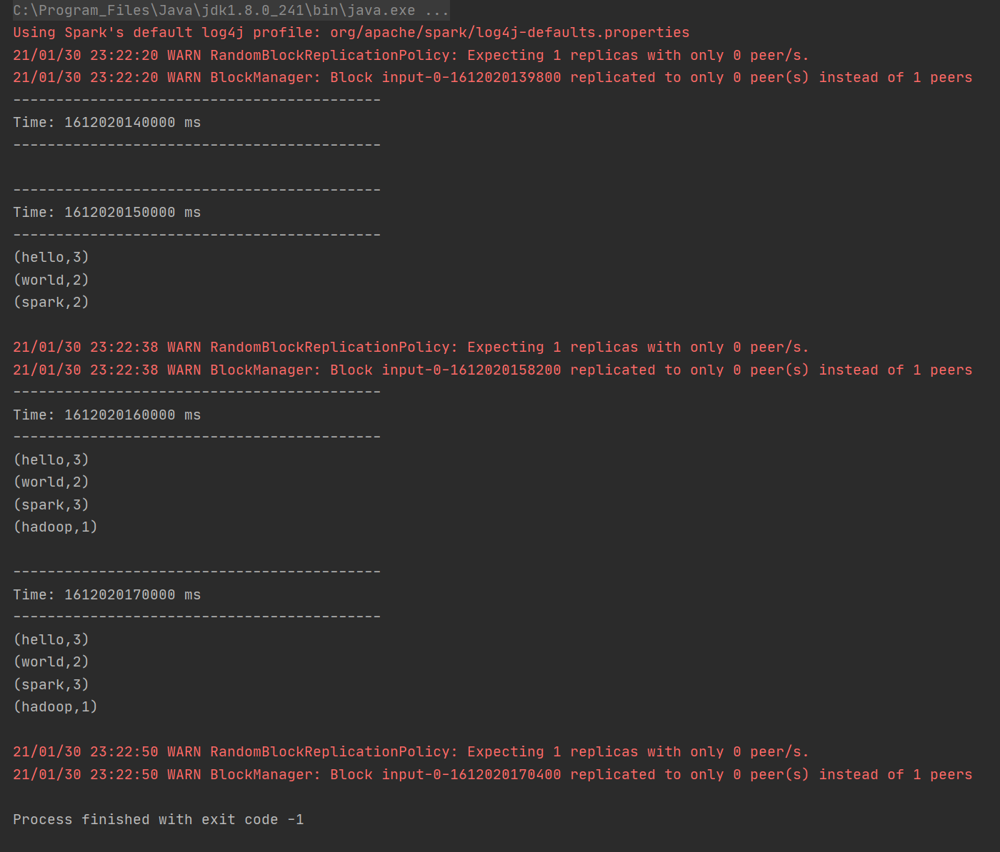

1、node01启动socket服务，然后发送一些单词出来，单词之间使用空格分隔
 2、创建maven工程，maven工程名称为streaming\operate1，导入sparkStreaming相关jar包
2、创建maven工程，maven工程名称为streaming\operate1，导入sparkStreaming相关jar包
pom.xml:
<properties>
<scala.version>2.11.8</scala.version>
<spark.version>2.3.3</spark.version>
</properties>
<dependencies>
<dependency>
<groupId>org.scala-lang</groupId>
<artifactId>scala-library</artifactId>
<version>${scala.version}</version>
</dependency>
<dependency>
<groupId>org.apache.spark</groupId>
<artifactId>spark-streaming_2.11</artifactId>
<version>${spark.version}</version>
</dependency>
</dependencies>
<build>
<sourceDirectory>src/main/scala</sourceDirectory>
<testSourceDirectory>src/test/scala</testSourceDirectory>
<plugins>
<plugin>
<groupId>net.alchim31.maven</groupId>
<artifactId>scala-maven-plugin</artifactId>
<version>3.2.2</version>
<executions>
<execution>
<goals>
<goal>compile</goal>
<goal>testCompile</goal>
</goals>
<configuration>
<args>
<arg>-dependencyfile</arg>
<arg>${project.build.directory}/.scala_dependencies</arg>
</args>
</configuration>
</execution>
</executions>
</plugin>
<plugin>
<groupId>org.apache.maven.plugins</groupId>
<artifactId>maven-shade-plugin</artifactId>
<version>2.4.3</version>
<executions>
<execution>
<phase>package</phase>
<goals>
<goal>shade</goal>
</goals>
<configuration>
<filters>
<filter>
<artifact>*:*</artifact>
<excludes>
<exclude>META-INF/*.SF</exclude>
<exclude>META-INF/*.DSA</exclude>
<exclude>META-INF/*.RSA</exclude>
</excludes>
</filter>
</filters>
<transformers>
<transformer implementation="org.apache.maven.plugins.shade.resource.ManifestResourceTransformer">
<mainClass></mainClass>
</transformer>
</transformers>
</configuration>
</execution>
</executions>
</plugin>
</plugins>
</build>
3、开发sparkStreaming接收socket单词数据，实现单词计数统计，并且需要使用updateStateByKey算子来实现每次单词计数的累加
package com.kkb.spark.streaming
import org.apache.log4j.{Level, Logger}
import org.apache.spark.SparkConf
import org.apache.spark.streaming.{Seconds, StreamingContext}
import org.apache.spark.streaming.dstream.{DStream, ReceiverInputDStream}
/**
* 实现把所有批次的单词出现的次数累加
*/
object UpdateStateByKeyWordCount {
def main(args: Array[String]): Unit = {
Logger.getLogger("org").setLevel(Level.WARN)
// todo: 1、创建SparkConf对象
val sparkConf: SparkConf = new SparkConf().setAppName("TcpWordCount").setMaster("local[2]")
// todo: 2、创建StreamingContext对象
val ssc = new StreamingContext(sparkConf,Seconds(10))
//需要设置checkpoint目录，用于保存之前批次的结果数据,该目录一般指向hdfs路径
ssc.checkpoint("hdfs://node01:8020/check-point-dir")
//todo: 3、接受socket数据
val socketTextStream: ReceiverInputDStream[String] = ssc.socketTextStream("node01",9999)
//todo: 4、对数据进行处理
val wordAndOneDstream: DStream[(String, Int)] = socketTextStream.flatMap(_.split(" ")).map((_,1))
val result: DStream[(String, Int)] = wordAndOneDstream.updateStateByKey(updateFunc)
//todo: 5、打印结果
result.print()
//todo: 6、开启流式计算
ssc.start()
ssc.awaitTermination()
}
//currentValue:当前批次中每一个单词出现的所有的1
//historyValues:之前批次中每个单词出现的总次数,Option类型表示存在或者不存在。 Some表示存在有值，None表示没有
def updateFunc(currentValue:Seq[Int], historyValues:Option[Int]):Option[Int] = {
val newValue: Int = currentValue.sum + historyValues.getOrElse(0)
Some(newValue)
}
}
4、将每次累加之后的结果进行打印到控制台
新增两行单词发送：
 控制台输出结果：
控制台输出结果：
